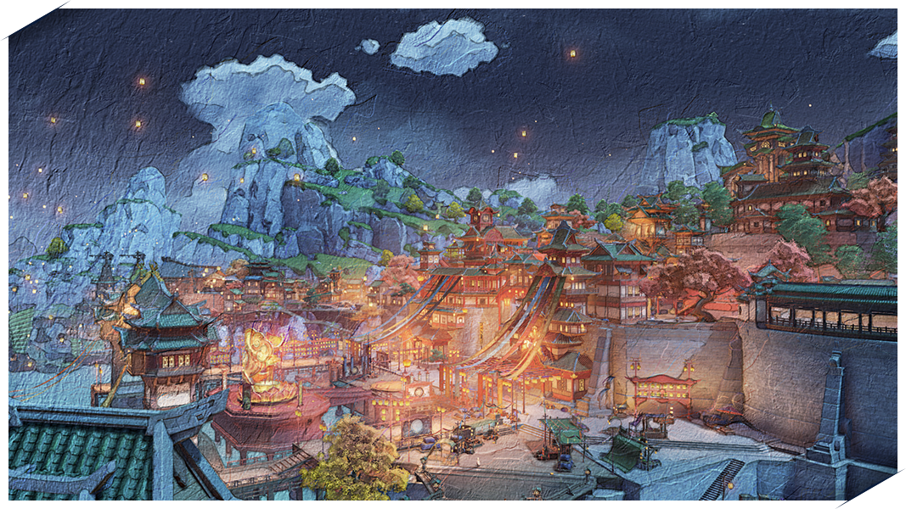

Воспоминания торговца о Ли Юэ
Я долго колебался, прежде чем принять приглашение от гильдии торговцев и гильдии искателей приключений Ли Юэ написать статью об их замечательном городе. С одной стороны, ещё будучи ребёнком я успел объездить весь Тейват с отцом и его караваном. Никто на всём Тейвате не знает все входы и выходы города так, как знаю их я и сами жители Ли Юэ. Но с другой стороны, я очень волнуюсь, потому что на своём пути я повстречал множество выдающихся поэтов и писателей. В сравнении с их трудами моя статья будет выглядеть как детский лепет. Поэтому, боюсь, я должен заранее попросить у читателя прощения за отсутствие у меня литературного таланта. Настоящий бестселлер написать у меня вряд ли получится. Так что следующие несколько страниц вам придётся потерпеть.
Во времена моего детства Ли Юэ уже был богатейшим торговым портом всего Тейвата, а поездка туда сулила огромную прибыль для всего нашего каравана. Я вспоминаю, как дети, услышав, что караван направляется в Ли Юэ, пытались тайком пробраться и спрятаться в наших повозках. Хоть это и было очень давно, но воспоминания о шумных улицах, толпах людей и диковинах на полках магазинов всё так же ярко вспыхивают в моей памяти. Когда я вспоминаю манящие ароматы из местных закусочных, у меня до сих пор начинают течь слюнки.
Когда настало время и семейный бизнес перешёл в моё управление, первым делом я повёл наш караван через все крупные города Тейвата. Тогда весь мир открылся передо мной, и гавань Ли Юэ стала для меня гораздо большим, чем просто улицы и пирсы, по которым я когда-то бегал босоногим мальчишкой.
Полагаясь на свои знания истории города, я осмелюсь сделать вывод о том, как именно Ли Юэ стал таким богатым. Процветание Ли Юэ напрямую связано с его удачным географическим положением. Это справедливо и в отношении любого другого крупного города Тейвата. Ли Юэ – это портовый город, окружённый с трёх сторон скалистыми горами. За этой горной цепью находятся обширные предгорья, равнины, отмели и рудники, полные драгоценных камней и металлов, которые искусные мастера Ли Юэ превращают в изысканные украшения. Большую роль в процветании торговли в Ли Юэ сыграло строительство гавани и открытие международных морских торговых путей. Именно экспорт драгоценностей заложил основу для финансового развития Ли Юэ. По сей день изысканные украшения, привезённые купцами из Ли Юэ, ценятся по всему континенту.
К настоящему моменту налажено морское сообщение между Ли Юэ и другими крупными портами континента. Торговое судно по-прежнему является отличным видом транспорта для тех, кто собирается вести торговлю с Ли Юэ, однако для обычных путешественников и туристов я бы порекомендовал обойтись сухопутными маршрутами для получения богатых впечатлений от путешествия. Вряд ли вам будет весело всё путешествие смотреть на синее полотно моря.
Из-за неприветливого рельефа Ли Юэ, наиболее популярный маршрут среди путешественников по суше начинается от винодельни «Рассвет» недалеко от Мондштадта, а затем направляется на юго-запад. Этот маршрут ведёт путешественников через живописные виды Мондштадта, а также по дороге у вас получится отведать местных фруктов. Вы поймёте, что подходите к границе Ли Юэ, когда открытые равнины сменятся горами и озерами.
Следуйте по краю озера на запад, и вы увидите две возвышающиеся скалы, служащие естественной границей, разделяющей Ли Юэ и Мондштадт, а между ними будет узкий проход, вымощенный деревянными досками. Мне редко приходится путешествовать этой дорогой, но когда всё-таки приходится, я стараюсь пройти её как можно быстрее. Но как-то раз мне довелось путешествовать вместе с одним пожилым рыбаком. По дороге мы смогли обсудить всё на свете – от названий различных видов речных рыб до древних легенд Ли Юэ. Он рассказал мне, что озёра в этом ущелье были благословлены самим Властелином Камня, поэтому остановка здесь на привал может духовно приблизить вас к архонтам.
Обычно я отплёвываюсь от всех этих суеверий, но моя жена-романтик поверила в его историю. С тех пор наш караван по пути в Ли Юэ каждый раз ненадолго останавливается здесь в надежде получить благословение от богов.

После того как вы пройдёте сквозь Каменные врата, перед вами откроется классический вид Ли Юэ: водоёмы, отражающие голубое небо, пятна зелени, проступающие между скалами и отмелями. В отдалении от всей этой красоты, среди болот Ди Хуа, на вершине гигантского каменного столба находится постоялый двор «Ван Шу», который служит ориентиром для караванщиков, проходящих через этот регион. Кто-то из торговцев ведёт свои дела с местными купцами прямо здесь, а кто-то – просто узнаёт свежие слухи и набирается сил перед оставшейся дорогой до гавани Ли Юэ.
Всё-таки мне потребовалась бы целая книга, чтобы записать каждую мелочь касательно Ли Юэ от времён моего детства до сегодняшних дней, поэтому я лучше просто остановлюсь здесь. Писать заключения – не самая сильная моя сторона, я просто скажу следующее: Я надеюсь, что меня вспомнят те, с кем свела нас судьба по пути в Ли Юэ.
P.S. Большое спасибо гильдии торговцев и гильдии искателей приключений за то, что дали мне возможность вновь пережить те прекрасные воспоминания, что связаны с Ли Юэ. Я также хотел бы поблагодарить свою жену Клэр за предоставленную частичку той любви и жизнерадостности, которой так не хватало в изначальной версии написанной мной статьи.
Заметки о Празднике морских фонарей
Ещё в мой первый раз в Ли Юэ я был потрясён красотой и богатством оживленной гавани. Издалека ощущалась пульсирующая жизненная сила, исходящая от зданий. Прогуливаясь по улицам, можно увидеть подплывающие корабли, а от придорожных лавок исходит такой аппетитный аромат, что текут слюнки. Даже если ты просто слоняешься по округе, в магазинчиках запросто наткнёшься на всевозможные редкости...
Конечно, будучи торговцем, здесь я всегда могу продать свои товары за привлекательную цену. В этот раз мне удалось попасть на Праздник морских фонарей. Вся гавань Ли Юэ выглядит куда оживлённее, чем в обычные дни. Вокруг взволнованные лица и даже Миллелиты, патрулирующие город, не кажутся такими строгими. Привезённые мною ткани разлетелись словно горячие пирожки. А кто-то скупал и самые дорогие ткани, нахваливая яркие цвета, мягкость и лёгкость материи. Вплетённые в ткань золотые нити наверняка будут красиво переливаться в свете праздничных фонарей.
Если гавань Ли Юэ в обычное время такая же стабильная и полная жизни, как горы, то на Праздник морских фонарей она так же прекрасна, как огни, наполняющие город в это время. В детстве мне нравилось слушать рассказы старого торговца в караване о местных обычаях и людях. Мне, конечно же, довелось услышать и о Празднике морских фонарей, когда народ Ли Юэ выпускает небесные фонарики по всему звёздному морю, чтобы указать душам погибших героев путь домой. В это время года люди прощаются со старым и привечают новое. Они молятся об удаче в новом году и пишут свои пожелания на небесных фонариках. А ещё в это время года в Ли Юэ устанавливается лунный фонарь. В отличие от обычных фонарей, этот фонарь делают жители Ли Юэ в память о бессмертных. Этот огромный фонарь высотой в несколько этажей весь заполнен огнями, что ярко горят, не угасая. Это одно из самых потрясающих зрелищ Праздника морских фонарей.
Это время, когда нельзя не попробовать блюда Ли Юэ. В праздник каждый торговец стремится наготовить побольше лакомств, в ресторанах и лавках толпятся люди, а улицы наполняются ароматами. И нет ничего лучше, чем, наевшись до отвала, побродить по праздничному рынку.

В ночь Праздника морских фонарей в этом году мне посчастливилось увидеть фейерверки Ли Юэ. Гавань озарилась яркими огнями, будто взошло солнце, а люди шумной и весёлой толпой с песнями и смехом гуляли по улицам. В сторону гавани в небо медленно поднималось несметное количество небесных фонарей, мерцающих, как звёзды. Вдруг в небе вспыхнули первые фейерверки, и толпа разразилась радостными криками. А потом один за другим в небо взмыли огни - прекраснейший вид. Немало мне удалось повидать за годы путешествий, но редко выпадали мне такие зрелища.
После фейерверка мне захотелось осмотреть улицы Ли Юэ. Мимо меня с криками пронеслась стайка детей. Они спешили посмотреть на фонари. Рядом молодая девушка в белом и её спутник держали фонарь, и она, закрыв глаза, с улыбкой на губках просила благословения... Мне даже повстречался мой торговый партнёр в толпе людей, пришедших посмотреть на фонари. Это было не лучшее время для деловых разговоров. Поэтому мы, обменявшись поздравлениями, улыбнулись друг другу и снова погрузились в атмосферу праздника.
Какие сюрпризы готовит Праздник морских фонарей в следующем году?